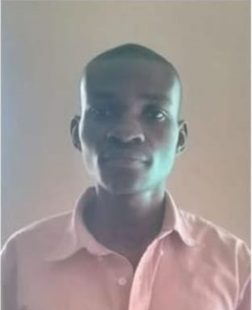

Executive Committee

Dr.Lawrence Otieno Jabuya
Dr. Lawrence Otieno Jabuya is an agricultural economist, agribusiness strategist, and climate resilience leader with over nine years of experience in sustainable development and community transformation. As Managing Director of Amity Sustain Centre and a prospective PhD scholar, he specializes in inclusive agribusiness, food systems resilience, and governance. He serves as National and International Vice Chairperson of the Chuka University Alumni Association and champions participatory leadership and evidence-based decision-making. As Founding Visionary and Chairperson of ARHICA’s Board of Directors, he provides strategic direction, governance oversight, and policy leadership to advance inclusive, climate-adaptive African communities.

Eng. Linus Eldon O
Eng. Linus Eldon O. is the Vice Chairperson of ARHICA, providing strategic governance support and institutional oversight to strengthen organizational systems and ensure structured operational growth. A graduate in Applied Computer Science, he brings expertise in ICT systems, digital infrastructure, and data governance. He integrates technology, innovation, and accountability to advance climate resilience and institutional transformation. He champions resilient institutions, inclusive leadership, and youth-driven climate innovation across Africa.

Mr.Vincent Omondi Isaiah

Full Name Here

Full Name Here

Mr.Omondi O. Sylvester
Sylvester Omondi is a dynamic leader and technology innovator, dedicated to promoting sustainable development and community resilience. As Coordinator and Executive Member, he oversees program implementation, strategic planning, and organizational coordination to ensure ARHICA’s initiatives achieve tangible results. With a background in Environmental Science and Technology and ongoing studies in Software Engineering, Sylvester combines governance experience with technical expertise. A certified Ethical Hacker, he strengthens organizational systems, digital infrastructure, and cybersecurity. He is committed to inclusive leadership, evidence-based decision-making, and innovative solutions that advance climate resilience and sustainable livelihoods.

Mr.Chrspine Omondi Okoth
Chrspine Omondi Okoth is a committed Agricultural Economist, financial advisor, and educator, dedicated to advancing sustainable agriculture and inclusive community development. A Chuka University graduate, he brings expertise in agricultural economics, financial management, food security, and agribusiness operations, supported by diverse professional experience in management, supervision, and community-focused initiatives. As Member at Large at ARHICA, Chrspine provides independent oversight, champions ethical governance, and promotes community accountability and inclusion. He is recognized for strong communication, information management, and stakeholder engagement skills, ensuring equitable participation, institutional integrity, and empowered communities.
Other Board Members

Full Name

Full Name